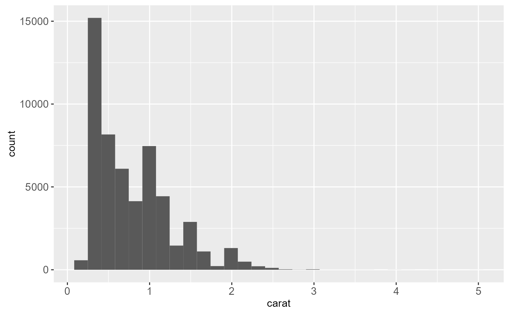
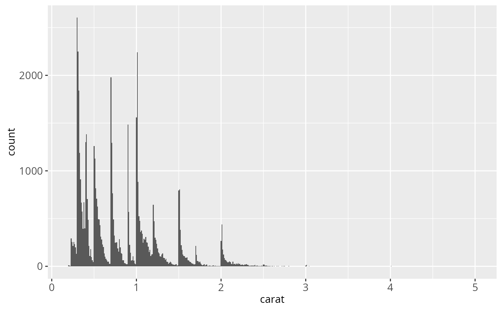
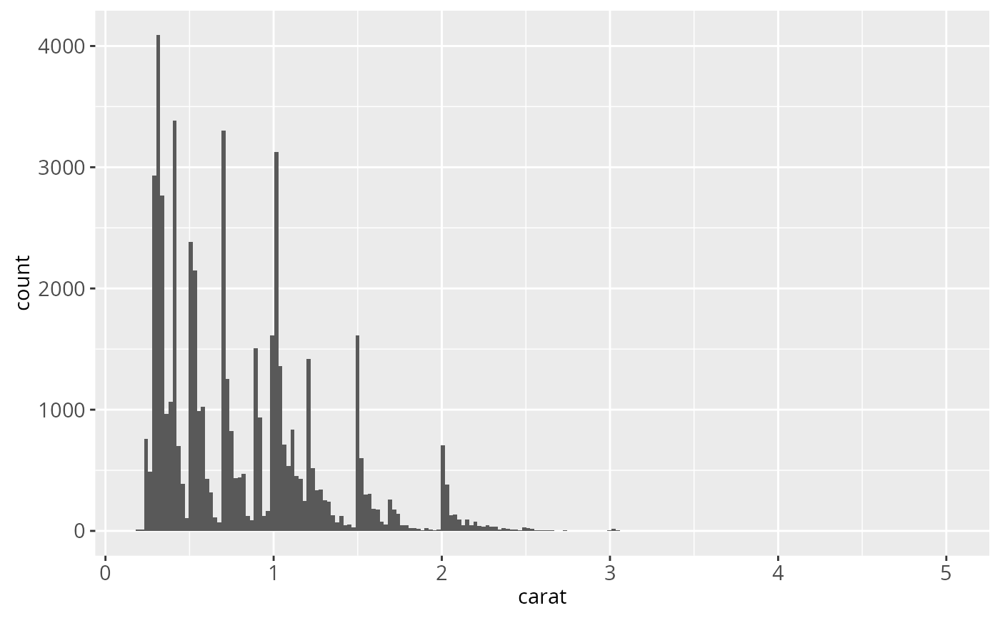
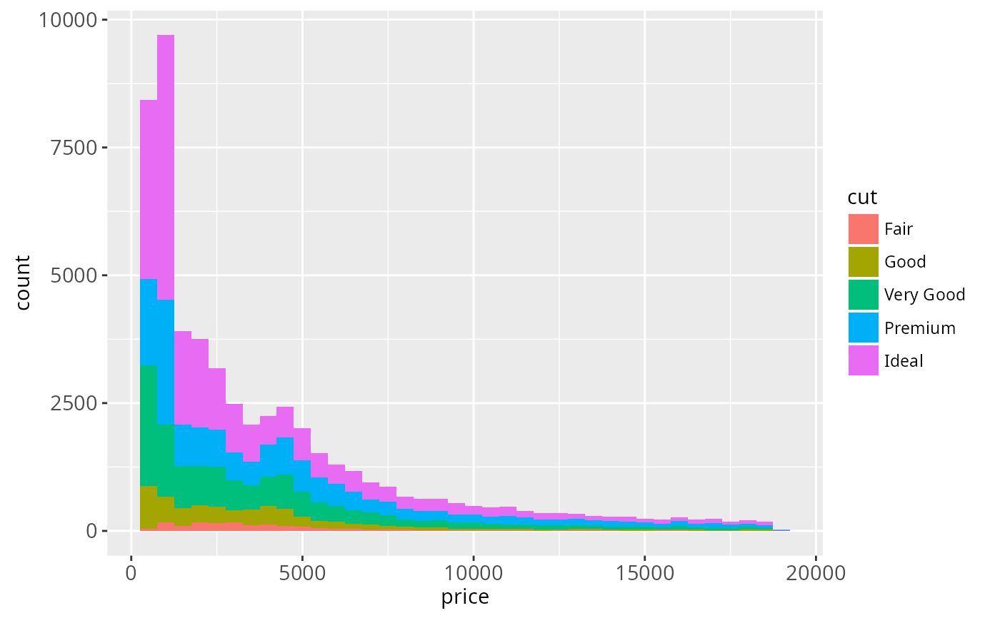
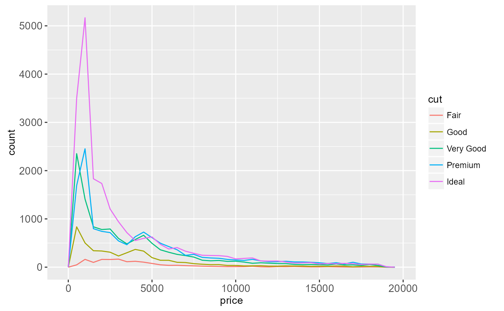
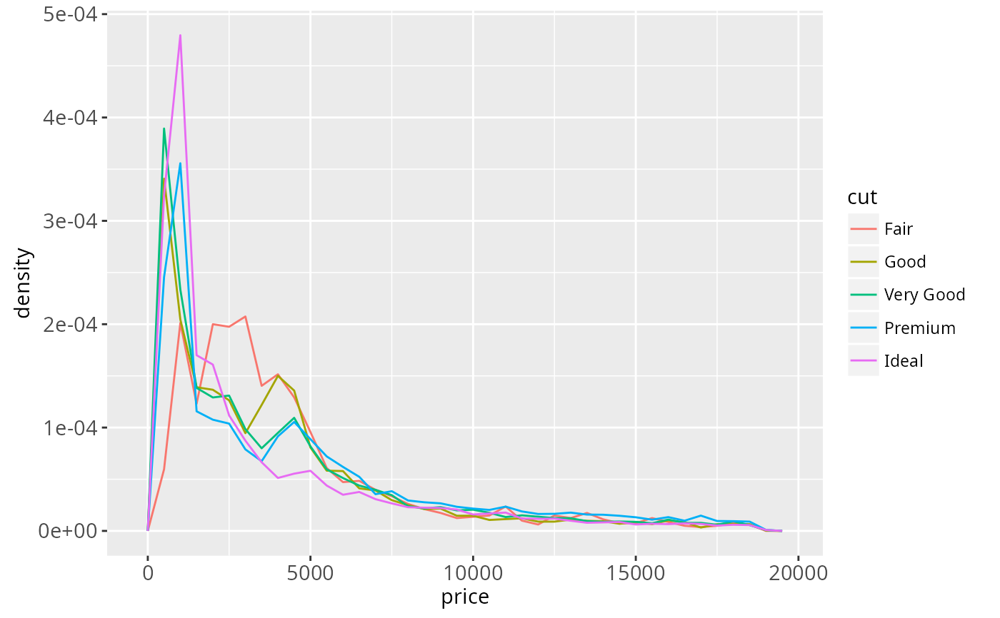
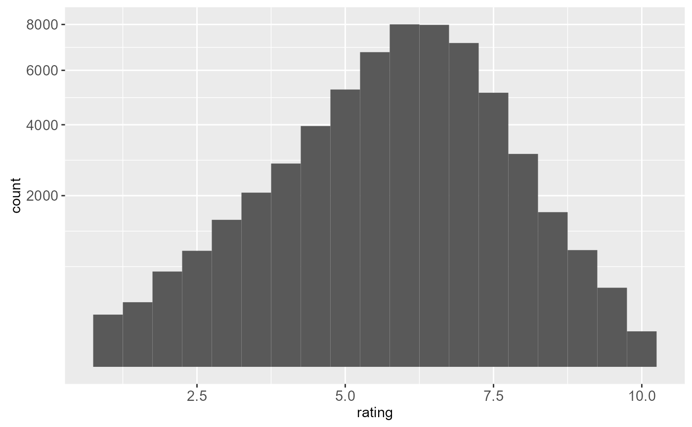

Histograms and frequency polygons.
Source:R/geom-freqpoly.r, R/geom-histogram.r, R/stat-bin.r
geom_histogram.RdDisplay a 1d distribution by dividing into bins and counting the number of observations in each bin. Histograms use bars; frequency polygons use lines.
Usage
geom_freqpoly(
mapping = NULL,
data = NULL,
stat = "bin",
position = "identity",
...,
na.rm = FALSE,
show.legend = NA,
inherit.aes = TRUE
)
geom_histogram(
mapping = NULL,
data = NULL,
stat = "bin",
position = "stack",
...,
binwidth = NULL,
bins = NULL,
na.rm = FALSE,
show.legend = NA,
inherit.aes = TRUE
)
stat_bin(
mapping = NULL,
data = NULL,
geom = "bar",
position = "stack",
...,
binwidth = NULL,
bins = NULL,
center = NULL,
boundary = NULL,
closed = c("right", "left"),
pad = FALSE,
na.rm = FALSE,
show.legend = NA,
inherit.aes = TRUE
)Arguments
- mapping
Set of aesthetic mappings created by
aesoraes_. If specified andinherit.aes = TRUE(the default), it is combined with the default mapping at the top level of the plot. You must supplymappingif there is no plot mapping.- data
The data to be displayed in this layer. There are three options:
If
NULL, the default, the data is inherited from the plot data as specified in the call toggplot.A
data.frame, or other object, will override the plot data. All objects will be fortified to produce a data frame. Seefortifyfor which variables will be created.A
functionwill be called with a single argument, the plot data. The return value must be adata.frame., and will be used as the layer data.- position
Position adjustment, either as a string, or the result of a call to a position adjustment function.
- ...
other arguments passed on to
layer. These are often aesthetics, used to set an aesthetic to a fixed value, likecolor = "red"orsize = 3. They may also be parameters to the paired geom/stat.- na.rm
If
FALSE(the default), removes missing values with a warning. IfTRUEsilently removes missing values.- show.legend
logical. Should this layer be included in the legends?
NA, the default, includes if any aesthetics are mapped.FALSEnever includes, andTRUEalways includes.- inherit.aes
If
FALSE, overrides the default aesthetics, rather than combining with them. This is most useful for helper functions that define both data and aesthetics and shouldn't inherit behaviour from the default plot specification, e.g.borders.- binwidth
The width of the bins. The default is to use
binsbins that cover the range of the data. You should always override this value, exploring multiple widths to find the best to illustrate the stories in your data.The bin width of a date variable is the number of days in each time; the bin width of a time variable is the number of seconds.
- bins
Number of bins. Overridden by
binwidth. Defaults to 30- geom, stat
Use to override the default connection between
geom_histogram/geom_freqpolyandstat_bin.- center
The center of one of the bins. Note that if center is above or below the range of the data, things will be shifted by an appropriate number of
widths. To center on integers, for example, usewidth=1andcenter=0, even if0is outside the range of the data. At most one ofcenterandboundarymay be specified.- boundary
A boundary between two bins. As with
center, things are shifted whenboundaryis outside the range of the data. For example, to center on integers, usewidth = 1andboundary = 0.5, even if1is outside the range of the data. At most one ofcenterandboundarymay be specified.- closed
One of
"right"or"left"indicating whether right or left edges of bins are included in the bin.- pad
If
TRUE, adds empty bins at either end of x. This ensures frequency polygons touch 0. Defaults toFALSE.
Details
By default, stat_bin uses 30 bins - this is not a good default,
but the idea is to get you experimenting with different binwidths. You
may need to look at a few to uncover the full story behind your data.
Aesthetics
geom_histogram uses the same aesthetics as geom_bar;
geom_freqpoly uses the same aesthetics as geom_line.
Computed variables
- count
number of points in bin
- density
density of points in bin, scaled to integrate to 1
- ncount
count, scaled to maximum of 1
- ndensity
density, scaled to maximum of 1
See also
stat_count, which counts the number of cases at each x
posotion, without binning. It is suitable for both discrete and continuous
x data, whereas stat_bin is suitable only for continuous x data.
Examples
ggplot(diamonds, aes(carat)) +
geom_histogram()
#> `stat_bin()` using `bins = 30`. Pick better value with `binwidth`.

ggplot(diamonds, aes(carat)) +
geom_histogram(binwidth = 0.01)

ggplot(diamonds, aes(carat)) +
geom_histogram(bins = 200)

# Rather than stacking histograms, it's easier to compare frequency
# polygons
ggplot(diamonds, aes(price, fill = cut)) +
geom_histogram(binwidth = 500)

ggplot(diamonds, aes(price, colour = cut)) +
geom_freqpoly(binwidth = 500)

# To make it easier to compare distributions with very different counts,
# put density on the y axis instead of the default count
ggplot(diamonds, aes(price, ..density.., colour = cut)) +
geom_freqpoly(binwidth = 500)

if (require("ggplot2movies")) {
# Often we don't want the height of the bar to represent the
# count of observations, but the sum of some other variable.
# For example, the following plot shows the number of movies
# in each rating.
m <- ggplot(movies, aes(rating))
m + geom_histogram(binwidth = 0.1)
# If, however, we want to see the number of votes cast in each
# category, we need to weight by the votes variable
m + geom_histogram(aes(weight = votes), binwidth = 0.1) + ylab("votes")
# For transformed scales, binwidth applies to the transformed data.
# The bins have constant width on the transformed scale.
m + geom_histogram() + scale_x_log10()
m + geom_histogram(binwidth = 0.05) + scale_x_log10()
# For transformed coordinate systems, the binwidth applies to the
# raw data. The bins have constant width on the original scale.
# Using log scales does not work here, because the first
# bar is anchored at zero, and so when transformed becomes negative
# infinity. This is not a problem when transforming the scales, because
# no observations have 0 ratings.
m + geom_histogram(origin = 0) + coord_trans(x = "log10")
# Use origin = 0, to make sure we don't take sqrt of negative values
m + geom_histogram(origin = 0) + coord_trans(x = "sqrt")
# You can also transform the y axis. Remember that the base of the bars
# has value 0, so log transformations are not appropriate
m <- ggplot(movies, aes(x = rating))
m + geom_histogram(binwidth = 0.5) + scale_y_sqrt()
}

rm(movies)
#> Warning: object 'movies' not found